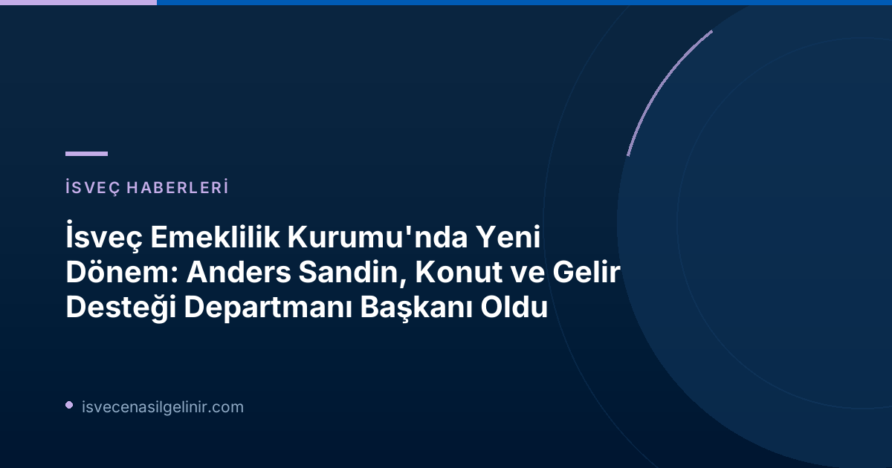

İsveç Emeklilik Kurumu'nda Stratejik Atama: Anders Sandin Kimdir?
Anders Sandin, İsveç bürokrasisinde uzun yıllara yayılan deneyimiyle tanınan önemli bir isimdir. Halihazırda Statens servicecenter'da (Devlet Hizmetleri Merkezi) İş Operasyonları Başkanı olarak görev yapmakta, burada müşteri ilişkileri, maaş, ekonomi ve danışmanlık hizmetlerinden sorumlu bulunmaktadır. Sandin'in kariyerinde daha önce Lantmäteriet (İsveç Harita, Kadastro ve Tapu Sicili Kurumu) ve Trafikverket (İsveç Ulaştırma İdaresi) gibi stratejik kamu kurumlarında üst düzey yöneticilik pozisyonlarında bulunması, onun geniş bir yelpazede liderlik ve yönetim becerilerine sahip olduğunu göstermektedir.
Konut ve Gelir Desteği Departmanı'nın Önemi ve Anders Sandin'in Rolü
Pensionsmyndigheten bünyesindeki Konut ve Gelir Desteği Departmanı, İsveç sosyal güvenlik sisteminin temel taşlarından biridir. Bu departman, vatandaşların konut giderleri ve gelire bağlı destekler gibi kritik ihtiyaçlarını karşılayarak yaşam kalitelerinin korunmasına yardımcı olur. Anders Sandin'in bu departmanının başına getirilmesi, kurumun bu alandaki hizmetlerini daha da güçlendirme ve verimliliği artırma hedefini yansıtmaktadır. Sandin'in uzun operasyonel deneyimi, departmanın süreçlerini optimize etme ve vatandaş memnuniyetini en üst düzeye çıkarma konusunda önemli katkılar sağlaması beklenmektedir.
Pensionsmyndigheten'den Açıklamalar ve Beklentiler
Pensionsmyndigheten Genel Direktörü Anna Pettersson Westerberg, Anders Sandin'i Kuruma kabul etmekten büyük memnuniyet duyduklarını belirtti. Westerberg, Sandin'in kapsamlı elden geçirme operasyonları ve müşteri memnuniyeti sağlama konusundaki sağlam deneyiminin altını çizdi. Ayrıca, Sandin'in Konut ve Gelir Desteği Departmanı çalışanları ve yöneticileriyle birlikte faaliyetleri geliştirmeye devam etmesini sabırsızlıkla beklediğini ifade etti. Bu açıklamalar, Kurumun Sandin'in liderliğinde önemli ilerlemeler kaydetmeyi hedeflediğini net bir şekilde ortaya koymaktadır.
Anders Sandin'in Yeni Görevi Hakkındaki Düşünceleri
Yeni göreviyle ilgili olarak Anders Sandin, Pensionsmyndigheten'in İsveç'in sosyal sigorta sisteminde merkezi bir rol oynayan ve vatandaşlarla doğrudan iletişimde olan bir kurum olmasının önemine vurgu yaptı. Mevcut görevinde maaş konularında Pensionsmyndigheten ile önemli işbirlikleri olduğunu ve Kurumun çok iyi bir itibara sahip olduğunu belirtti. Sandin, sonbaharda göreve başlamayı, yeni görevine odaklanmayı ve tüm yeni çalışma arkadaşlarıyla tanışmayı dört gözle beklediğini dile getirdi. Bu açıklamalar, Sandin'in göreve büyük bir motivasyon ve sorumluluk bilinciyle yaklaştığını göstermektedir.
İsveç Sosyal Güvenlik Sistemindeki Süreçler ve Vatandaşlık
Pensionsmyndigheten'in İsveç sosyal güvenlik sistemindeki rolü, vatandaşların emeklilik, konut ve gelir destekleri gibi temel haklarına erişimini sağlamaktır. Bu kurumun faaliyetleri, İsveç'te yaşayan herkesin refahını doğrudan etkiler. İsveç vatandaşlık süreçleriyle ilgili olanlar için bu tür kurumsal atamalar, ülkenin yönetim anlayışı ve toplumsal hizmet kalitesi hakkında ipuçları sunar. sverigemedborgarskapsprov.com adresi üzerinden İsveç vatandaşlık süreçleri hakkında bilgi edinen kişilerin, bu tür kamu kurumlarının işleyişini anlamaları, entegrasyon süreçlerine de katkı sağlayacaktır.
Önemli Tarihler ve İletişim Bilgileri
- Göreve Başlama Tarihi: 1 Ekim 2026
- Duyuru Kurumu: Pensionsmyndigheten (İsveç Emeklilik Kurumu)
Basın İçin İletişim (32. ve 33. Hafta)
- Basın Servisi: 010-454 30 00
- Basın Sekreteri Johan Andersson: 072-210 21 63
Referanslar: Pensionsmyndigheten Resmi Duyurusu
İsveç'e Göçmenlik ve Vatandaşlık Süreçleri Hakkında Daha Fazla Bilgi Edinin!
İsveç'te yaşamak, çalışmak veya vatandaşlık almakla ilgili aklınızda sorular mı var? Güncel duyuruları, yasal süreçleri ve pratik bilgileri isveccenasilgelinir.com adresinde bulabilirsiniz.